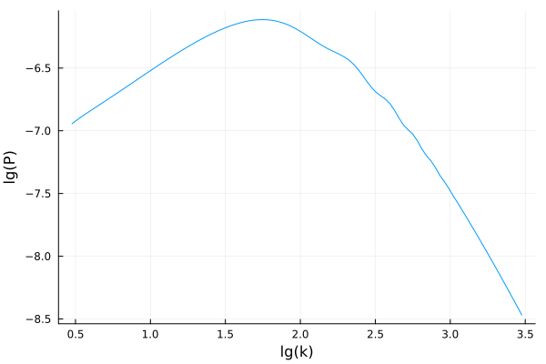
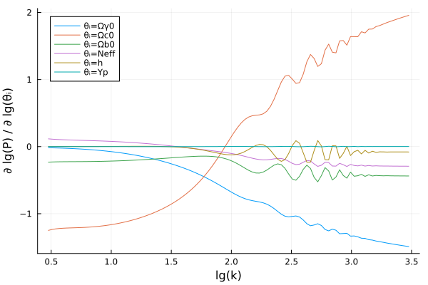
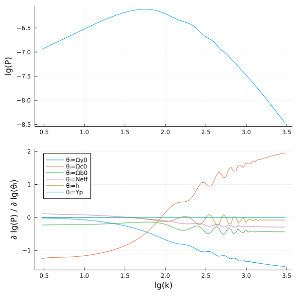

Using automatic differentiation
This tutorial shows how to compute the (cold dark matter) power spectrum $P(k; \theta)$ and its (logarithmic) derivatives
\[\frac{\partial \lg P}{\partial \lg \theta_i}\]
using automatic differentiation with ForwardDiff.jl. This technique can also differentiate any other quantity.
1. Wrapping the evaluation
We must first decide which parameters $\theta$ the power spectrum $P(k; \theta)$ will be considered a function of. To do so, let us write a small wrapper function that calculates the power spectrum as a function of the parameters $(\Omega_{\gamma 0}, \Omega_{c0}, \Omega_{b0}, N_\textrm{eff}, h, Y_p)$, following the Getting started tutorial:
using SymBoltz
M = ΛCDM()
# define ordering and values of parameters
θ_syms = [M.γ.Ω0, M.c.Ω0, M.b.Ω0, M.ν.Neff, M.g.h, M.b.rec.Yp] # symbolic indices
θ_strs = ["Ωγ0" "Ωc0" "Ωb0" "Neff" "h" "Yp"] # plot labels
θ0 = [5e-5, 0.27, 0.05, 3.0, 0.7, 0.25] # numerical values
P(k, θ) = power_spectrum(solve(M, θ_syms .=> θ, k), M.c, k)P (generic function with 1 method)It is now easy to evaluate the power spectrum:
ks = 10 .^ range(-3, 0, length=100) / SymBoltz.k0 # TODO: improve on units
Ps = P(ks, θ0)100-element Vector{Float64}:
1.1379555088376669e-7
1.2128553910409242e-7
1.287478185930112e-7
1.363243024399291e-7
1.4413292770020925e-7
1.5227006526658784e-7
1.6082296852230452e-7
1.698603923287529e-7
1.7944664605261233e-7
1.896332068896265e-7
⋮
1.132592920191127e-8
9.787578888985157e-9
8.45069338632518e-9
7.285740913935314e-9
6.27274238119831e-9
5.393770901058734e-9
4.632322980716205e-9
3.973668033776811e-9
3.4047255587285173e-9This can be plotted with
using Plots
plot(log10.(ks), log10.(Ps); xlabel = "lg(k)", ylabel = "lg(P)", label = nothing)
2. Calculate the derivatives
To get $\partial \lg P / \partial \lg \theta$, we can simply pass the wrapper function P(k, θ) through ForwardDiff.jacobian:
using ForwardDiff
lgP(lgθ) = log10.(P(ks, 10 .^ lgθ)) # ForwardDiff.jacobian needs an array -> array function
dlgP_dlgθs = ForwardDiff.jacobian(lgP, log10.(θ0))100×6 Matrix{Float64}:
-0.0168841 -1.24856 -0.231191 0.116056 0.00125041 -8.72478e-6
-0.0180648 -1.23502 -0.228682 0.111618 0.00127418 -9.61926e-6
-0.0194579 -1.22597 -0.227003 0.108089 0.00130853 -1.06718e-5
-0.0210723 -1.22019 -0.22593 0.105214 0.00135336 -1.18946e-5
-0.0229086 -1.21638 -0.225223 0.102807 0.00140909 -1.3316e-5
-0.0249734 -1.21371 -0.224724 0.100731 0.0014761 -1.49231e-5
-0.0272828 -1.21181 -0.22437 0.0988791 0.00155564 -1.6778e-5
-0.0298465 -1.21018 -0.224066 0.0971704 0.00164873 -1.8862e-5
-0.0326753 -1.20843 -0.223738 0.0955434 0.00175648 -2.12187e-5
-0.0357841 -1.20634 -0.22335 0.0939488 0.00188017 -2.38573e-5
⋮ ⋮
-1.41678 1.80484 -0.432952 -0.288487 -0.0777717 0.00131111
-1.42649 1.82674 -0.434983 -0.289124 -0.078262 0.00156857
-1.43721 1.8489 -0.433469 -0.289229 -0.0805473 0.00150525
-1.44654 1.86757 -0.434854 -0.290171 -0.0791235 0.00147324
-1.45562 1.88657 -0.4357 -0.290681 -0.0791126 0.00150182
-1.46461 1.90516 -0.436097 -0.291052 -0.0793369 0.00149945
-1.47335 1.923 -0.43651 -0.291426 -0.0793011 0.00148641
-1.48173 1.9402 -0.436932 -0.291731 -0.0792999 0.00149932
-1.4898 1.95686 -0.437313 -0.291937 -0.0794342 0.00149691The matrix element dlgP_dlgθs[i, j] now contains $\partial \lg P(k_i) / \partial \lg \theta_j$. We can plot them all at once:
plot(log10.(ks), dlgP_dlgθs; xlabel = "lg(k)", ylabel = "∂ lg(P) / ∂ lg(θᵢ)", labels = "θᵢ=" .* θ_strs)
Get values and derivatives together
The above example showed how to calculate the power spectrum values and their derivatives through two separate calls. If you need both, it is faster to calculate them simultaneously with the package DiffResults.jl:
using DiffResults
Pres = DiffResults.JacobianResult(ks, θ0) # allocate buffer for value+derivatives for a function with θ0-sized input and ks-sized output
Pres = ForwardDiff.jacobian!(Pres, lgP, log10.(θ0)) # evaluate value+derivatives of lgP(log10.(θ0)) and store the results in Pres
lgPs = DiffResults.value(Pres) # extract value
dlgP_dlgθs = DiffResults.jacobian(Pres) # extract derivatives
p1 = plot(log10.(ks), lgPs; ylabel = "lg(P)", label = nothing)
p2 = plot(log10.(ks), dlgP_dlgθs; xlabel = "lg(k)", ylabel = "∂ lg(P) / ∂ lg(θᵢ)", labels = "θᵢ=" .* θ_strs)
plot(p1, p2, layout=(2, 1), size = (600, 600))
General approach
The technique shown here can be used to calculate the derivative of any SymBoltz.jl output quantity:
- Write a wrapper function
output(input)that calculates the desired output quantities from the desired input quantities. - Use
ForwardDiff.derivative(output, input)(scalar-to-scalar),ForwardDiff.gradient(output, input)(vector-to-scalar) orForwardDiff.jacobian(output, input)(vector-to-vector) to evaluate the derivative ofoutputat the valuesinput. Or use the similar functions inDiffResultsto calculate the value and derivatives simultaneously.